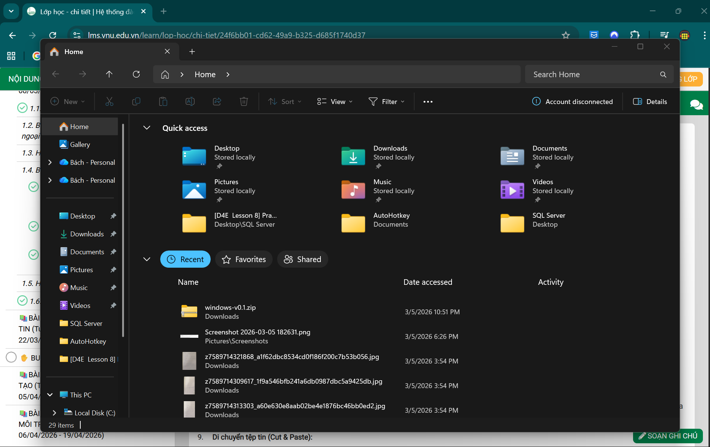
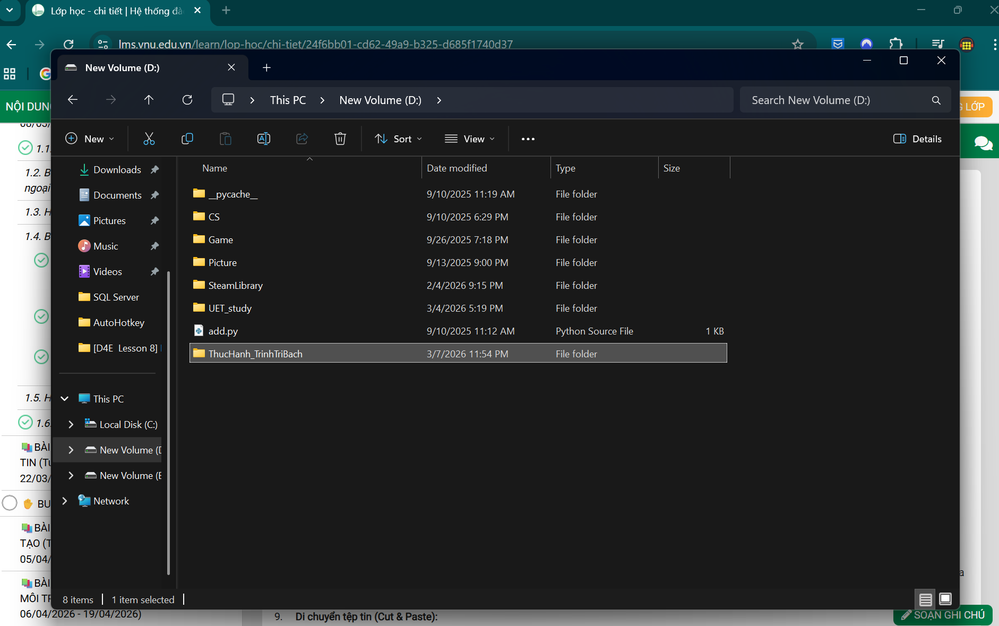
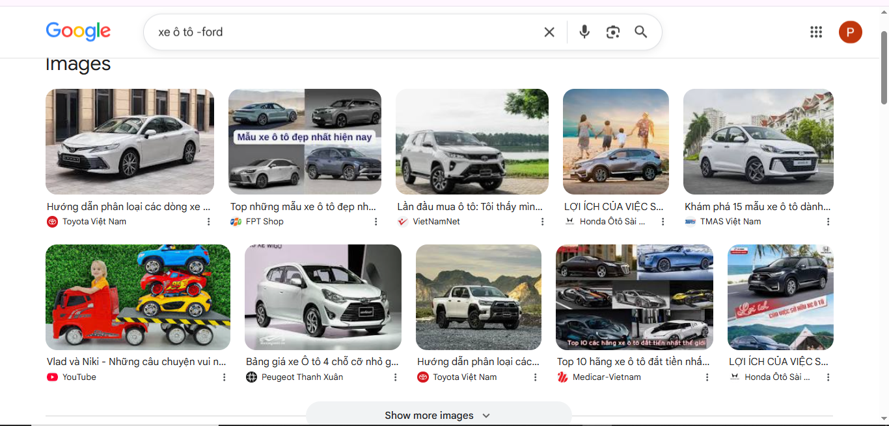
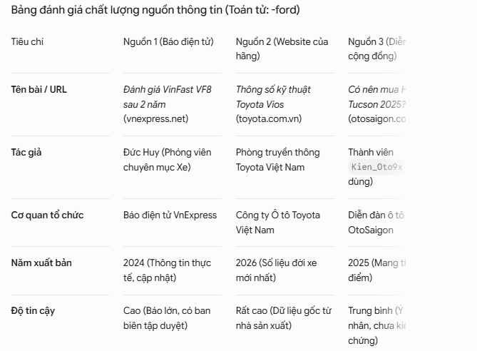
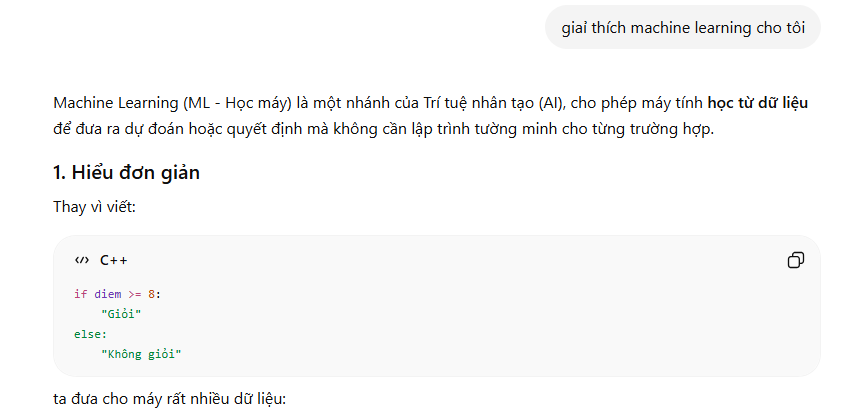
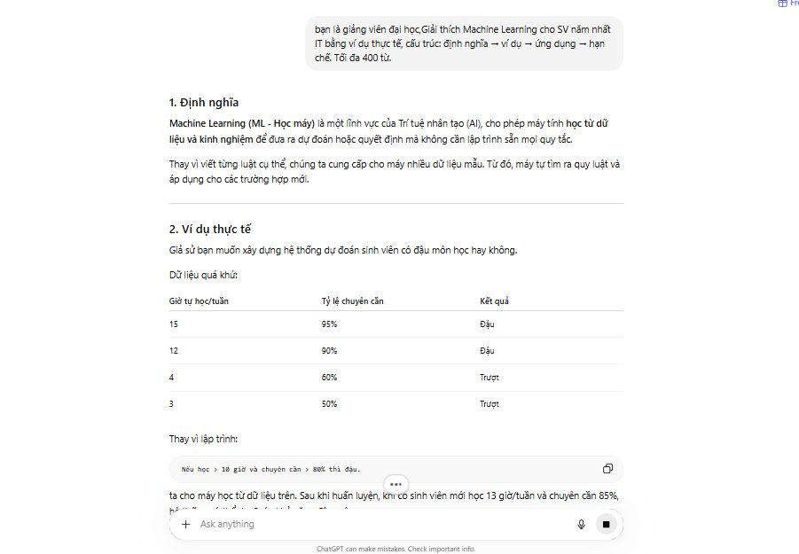
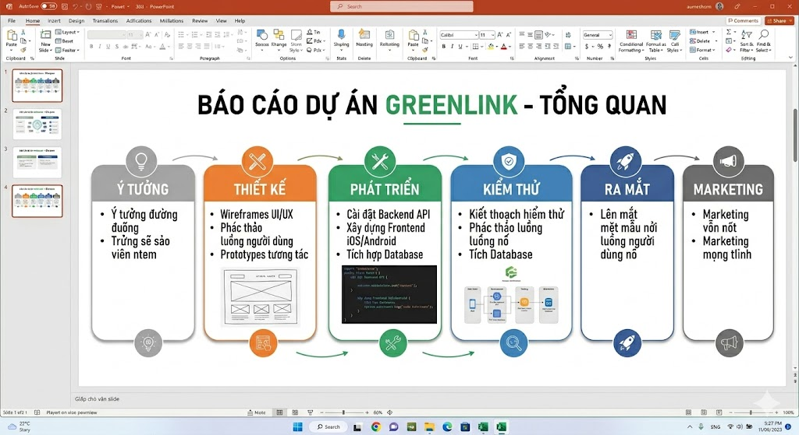
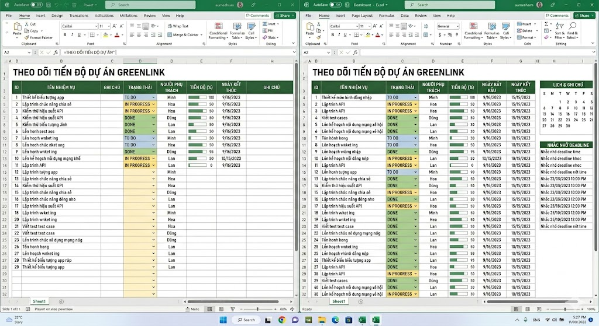
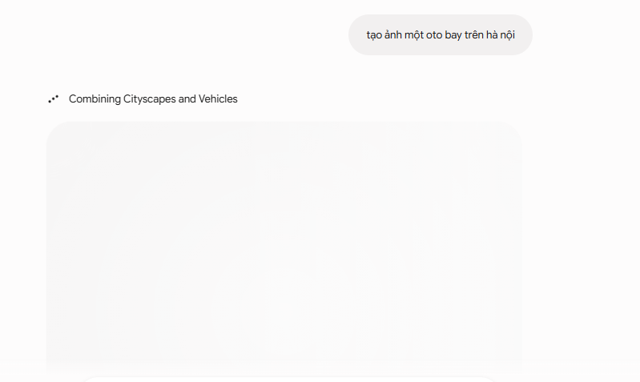

Sinh viên ngành Trí tuệ Nhân tạo tại Trường Đại học Công nghệ — ĐHQGHN, đang xây dựng nền tảng kỹ năng số để phục vụ nghiên cứu và ứng dụng AI trong tương lai.
Tôi theo đuổi ngành Trí tuệ Nhân tạo với mong muốn hiểu sâu các nền tảng lý thuyết và biết ứng dụng công nghệ vào giải quyết bài toán thực tế. Trong học kỳ này, tôi hướng đến việc thành thạo các công cụ kỹ thuật số thiết yếu — từ quản lý tệp tin cho đến sử dụng AI có trách nhiệm.
[ Bổ sung định hướng phát triển cá nhân, lý do chọn ngành AI, mục tiêu dài hạn của bạn ]
Portfolio này được xây dựng nhằm ba mục đích: thể hiện các kỹ năng số đã học, lưu trữ sản phẩm cá nhân để dễ dàng truy cập và chia sẻ, đồng thời tạo nền tảng phát triển thương hiệu cá nhân trong lĩnh vực AI.
Mỗi bài tập phản ánh quá trình thực hành có chủ đích — từ kỹ năng cơ bản đến tư duy phản biện về đạo đức khi sử dụng AI.
Thao tác cơ bản với tệp tin và thư mục — Xây dựng hệ thống tổ chức dữ liệu cá nhân
Nắm vững nguyên tắc tổ chức tệp tin và thư mục logic trên máy tính; thiết lập quy tắc đặt tên tệp khoa học, nhất quán nhằm tối ưu hóa quy trình quản lý dữ liệu cá nhân phục vụ học tập và nghiên cứu.
YYYY-MM-DD_TenFile_v1Hệ thống thư mục 3 tầng: Năm học → Môn học → Loại tài liệu (bài giảng, bài tập, tài liệu tham khảo, sản phẩm nộp). Quy tắc đặt tên áp dụng nguyên tắc date-first + kebab-case để đảm bảo thứ tự sắp xếp tự nhiên theo thời gian và dễ tìm kiếm.


Tìm kiếm và đánh giá thông tin học thuật — Sử dụng toán tử nâng cao và đánh giá độ tin cậy
Thành thạo việc sử dụng 3–4 toán tử tìm kiếm nâng cao trên Google Scholar và các CSDL học thuật; phát triển tư duy phân tích và đánh giá chất lượng nguồn thông tin theo tiêu chuẩn CRAAP.
site: filetype: "..." -Sử dụng thành thạo 4 toán tử nâng cao. Phân tích sâu cho thấy kết hợp site:edu + filetype:pdf cho kết quả học thuật chất lượng cao nhất.
Bảng đánh giá 3 nguồn học thuật với 5 tiêu chí, kết luận về mức độ tin cậy và phù hợp cho mục đích nghiên cứu AI.


Viết Prompt hiệu quả — Áp dụng Prompt Engineering để tối ưu đầu ra AI
Hiểu và áp dụng thành thạo các nguyên tắc Prompt Engineering — cấu trúc vai trò, bối cảnh và yêu cầu rõ ràng — nhằm tối ưu chất lượng phản hồi AI cho nhiều tác vụ học tập khác nhau.
"Giải thích machine learning cho tôi."
→ Phản hồi chung chung, không đúng mức độ, thiếu ví dụ.
"Bạn là giảng viên ĐH. Giải thích Machine Learning cho SV năm nhất IT bằng ví dụ thực tế, cấu trúc: định nghĩa → ví dụ → ứng dụng → hạn chế. Tối đa 400 từ."
→ Phản hồi có cấu trúc rõ, phù hợp trình độ, có ví dụ cụ thể.


Sử dụng công cụ hợp tác trực tuyến — Lập kế hoạch và điều phối dự án nhóm
Thành thạo sử dụng công cụ quản lý dự án nhóm trực tuyến để lập kế hoạch, phân công nhiệm vụ, theo dõi tiến độ và phối hợp làm việc nhóm hiệu quả trong môi trường số.
[ Trello / Notion / Asana / Google Workspace — điền công cụ thực tế đã dùng ]
Thiết lập quy trình Kanban cơ bản, phân công công việc theo năng lực, theo dõi tiến độ real-time và phối hợp làm việc không đồng bộ hiệu quả.


Sử dụng AI tạo sinh để hỗ trợ sáng tạo — Tạo sản phẩm nội dung số hoàn chỉnh
Khai thác hiệu quả các công cụ AI tạo sinh (văn bản, hình ảnh, video) để tạo sản phẩm nội dung số chuyên nghiệp; hiểu cơ chế và mô tả chi tiết quy trình sản xuất với AI.
[ Mô tả sản phẩm nội dung đã tạo: hình ảnh / bài viết / video ngắn / infographic — thêm chi tiết thực tế của bạn ]

Sử dụng AI có trách nhiệm — Xây dựng bộ nguyên tắc cá nhân về đạo đức AI
Xây dựng bộ nguyên tắc cá nhân gồm 5–7 điều về sử dụng AI có trách nhiệm trong học tập; phân tích sâu các vấn đề đạo đức AI qua nghiên cứu chính sách thực tế.
Minh bạch khi sử dụng AI — luôn ghi chú công cụ AI đã dùng trong bài nộp.
Không sử dụng AI thay thế tư duy — AI hỗ trợ quá trình học, không thay thế việc học.
Kiểm chứng thông tin — không chấp nhận kết quả AI mà không xác minh từ nguồn gốc.
Bảo vệ dữ liệu cá nhân — không nhập thông tin nhạy cảm vào hệ thống AI bên thứ ba.
Nhận thức về thiên kiến — AI có thể có bias, chủ động kiểm tra và không tin mù quáng.
[ Thêm 1–2 nguyên tắc cá nhân khác ]
Quá trình xây dựng Portfolio là hành trình từ người dùng công nghệ thụ động trở thành người chủ động khai thác và đánh giá công cụ số. Mỗi bài tập mở ra một lớp hiểu biết mới — từ việc tổ chức tệp tin cho đến những câu hỏi phức tạp về đạo đức AI.
Xây dựng Portfolio không chỉ là nộp bài — đây là cơ hội để nhìn lại toàn bộ hành trình học tập trong một học kỳ. Các kỹ năng số không tồn tại độc lập mà luôn liên kết: tìm kiếm thông tin tốt giúp viết Prompt tốt hơn; hiểu AI tạo sinh giúp nhận thức về trách nhiệm AI sâu sắc hơn.
Sau một học kỳ, điều tôi mang theo không chỉ là kỹ năng thao tác công cụ, mà là tư duy người dùng công nghệ có phản biện — biết đặt câu hỏi về nguồn gốc thông tin, hiểu giới hạn của AI, và chủ động bảo vệ tính liêm chính học thuật trong môi trường số ngày càng phức tạp.
[ Nêu bật 2–3 kỹ năng cụ thể bạn cảm thấy phát triển rõ nhất — ví dụ: kỹ năng đánh giá nguồn tin, Prompt Engineering, hay nhận thức về đạo đức AI ]
Điểm tôi tâm đắc nhất là khả năng tự động hóa tuyệt vời của các công cụ AI. Việc tự tay viết vài dòng lệnh để máy tính lập tức tạo ra văn bản, hình ảnh hay mã code hoàn chỉnh thực sự kỳ diệu. Điều này không chỉ giúp tối ưu thời gian làm việc mà còn mở ra những hướng tư duy sáng tạo vô tận cho tôi.
Khó khăn lớn nhất là việc học cách "giao tiếp" chuẩn xác với AI. Viết một câu lệnh (prompt) để máy hiểu và làm đúng ý tưởng của mình phức tạp hơn tôi tưởng. Ngoài ra, tốc độ cập nhật của công nghệ số quá nhanh khiến tôi đôi lúc bị ngợp, buộc phải liên tục tự đọc thêm tài liệu để không bị tụt hậu.